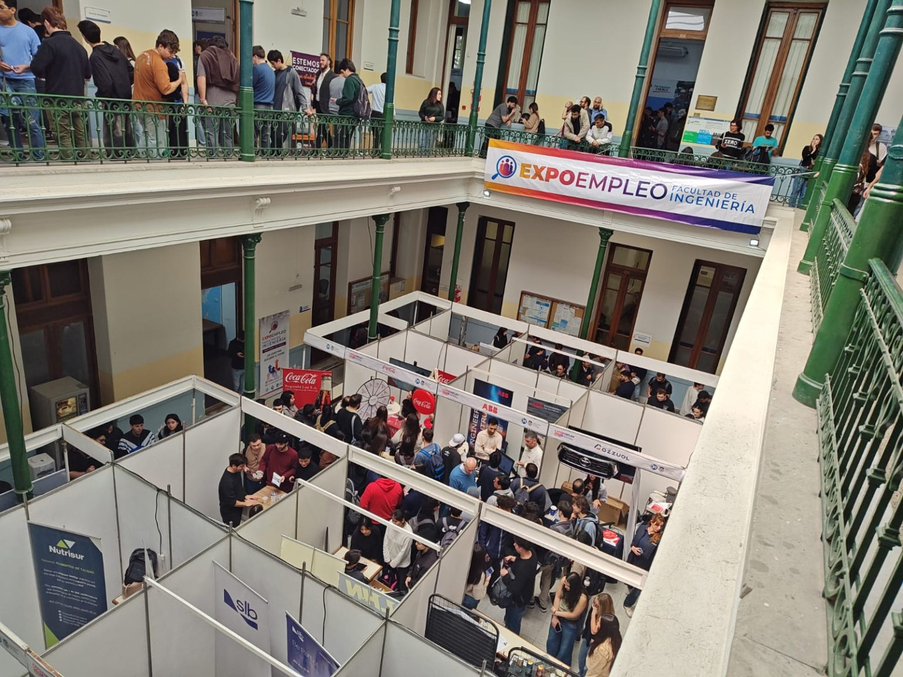
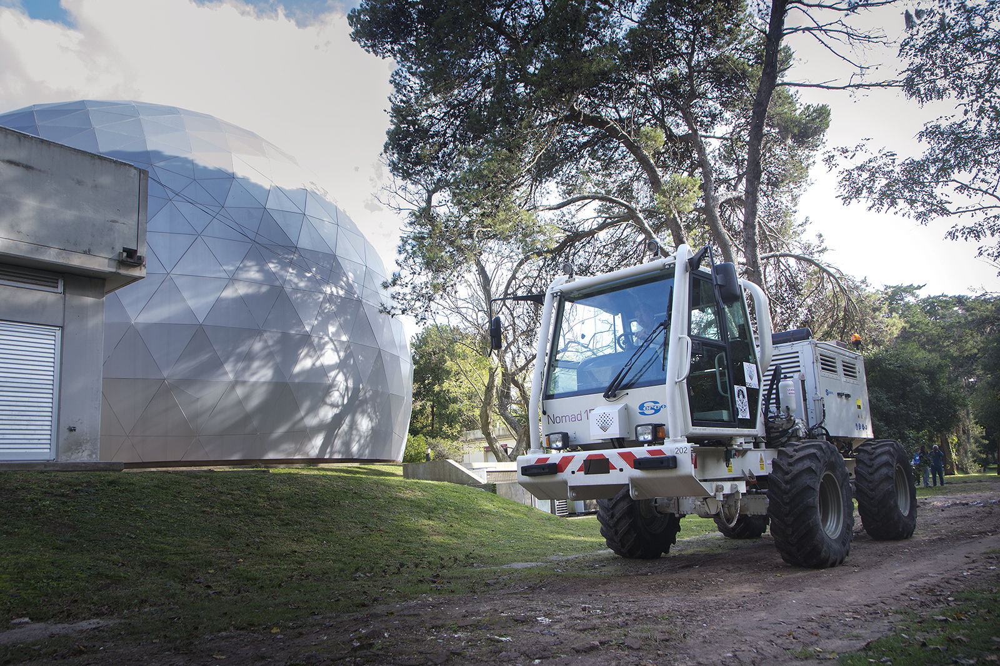
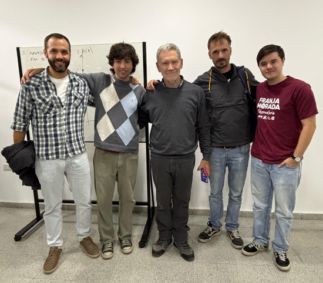
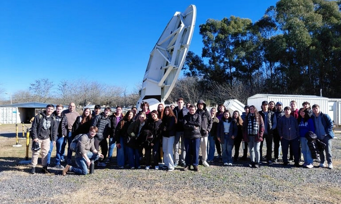

Expo Empleo y jornadas temáticas
Promovimos y acompañamos espacios de encuentro con el mundo laboral, como Expo Empleo y distintas jornadas vinculadas a temas estratégicos de nuestras carreras.
Facultad y Vida Profesional · Vinculación y Viajes
Experiencias que conectan la formación académica con el mundo profesional y acercan a estudiantes a distintas realidades de nuestras carreras.
Formación integral
Impulsamos actividades que fortalecen la formación académica y la conexión con el ámbito profesional, para que el paso por la Facultad también acerque experiencias prácticas, nuevas herramientas y redes de contacto.

Promovimos y acompañamos espacios de encuentro con el mundo laboral, como Expo Empleo y distintas jornadas vinculadas a temas estratégicos de nuestras carreras.

Impulsamos actividades que permiten conocer herramientas, metodologías y ámbitos reales de trabajo, acercando a estudiantes a experiencias concretas por fuera del aula.

Generamos instancias para escuchar a profesionales de distintas áreas, conocer recorridos posibles y ampliar la mirada sobre las salidas laborales de nuestras carreras.

Aprender más allá del aula
Organizamos viajes y visitas técnicas para acercar a estudiantes a institutos, centros de investigación y encuentros académicos. Estas experiencias permiten conocer de cerca cómo trabajan profesionales de nuestras áreas y explorar distintas ramas de las carreras.